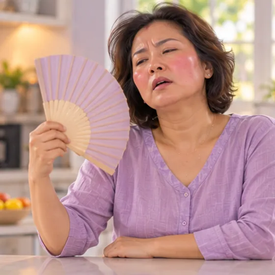

Sweating
Sweat coming from the skin as the body cools itself down
What it is
Sweating is how the body cools down, and it is normal in the heat or when active or nervous, but sweating for no clear reason may need a check-up.
- Skin all over the body
- Happens to everyone
- Damp, wet skin
- Which doctor
- Family doctor; skin doctor if it is troublesome
- Common in
- Everyone; more in heat, with exercise, stress, fever or menopause
- Contagious
- No
- Course
- Usually settles when you cool down or calm down
Common signs
Sweating a lotHyperhidrosis 
Fever, feeling hotFever (pyrexia) 
Soaking sweats at nightNight sweats 
Sudden hot flushesHot flushes 
Racing, pounding heartPalpitations
Why it happens
- Hot weather, a warm room or heavy clothes
- Exercise, hard work, spicy food or hot drinks
- Feeling nervous, stressed, afraid or embarrassed
- Fever or an infection; hot flushes around menopause
- Some medicines, or conditions such as an overactive thyroid or low blood sugar
See a doctor first if
- Cold sweat with chest pain or pressure, pain in the arm or jaw, or trouble breathing: call 999
- Heavy sweating with fainting, confusion or great weakness: go to hospital now
- Fever that is high or lasts more than a few days
- Soaking night sweats, or sweating with weight loss you cannot explain
- Sweating with a racing heart, shaking hands, or feeling hot all the time
- Sweating that is new, much more than usual, or disturbs your sleep
If any apply, please see a doctor before a session.
This page is general information. Please keep taking your normal medicine and keep seeing your doctor.
Keep taking your normal medicine and keep seeing your doctor. Our session is a gentle support and does not replace medical care.
Looking after yourself

Wear loose cotton clothesBreathable clothing 
Drink enough waterAdequate hydration 
Cut down on coffee and teaLess caffeine
More ways to look after yourself
- Stay in cool, airy places; use a fan or air-conditioning if you can
- Shower daily, dry the skin well and change out of damp clothes
Tell your therapist
- Fever or an active infection
- A heart condition
- Diabetes or less feeling in the skin
- Pregnancy
Your therapist will go through this with you before starting.
Questions and answers
What is Sweating?
Sweat coming from the skin as the body cools itself down. Sweating is how the body cools down, and it is normal in the heat or when active or nervous, but sweating for no clear reason may need a check-up.
What are the common signs of Sweating?
Sweating a lot · Fever, feeling hot · Soaking sweats at night · Sudden hot flushes · Racing, pounding heart
Why does Sweating happen?
Hot weather, a warm room or heavy clothes · Exercise, hard work, spicy food or hot drinks · Feeling nervous, stressed, afraid or embarrassed · Fever or an infection; hot flushes around menopause · Some medicines, or conditions such as an overactive thyroid or low blood sugar
How can I look after myself with Sweating?
Wear loose cotton clothes · Drink enough water · Cut down on coffee and tea
Can an AI Body Master session help with Sweating?
A session is gentle, needle-free meridian support for your wellbeing. It does not treat or cure Sweating and never replaces your medicine or your doctor. Tell your therapist about it before the session starts.
Related conditions
References: General information based on public health sources such as Mayo Clinic, NHS, Cleveland Clinic and NCBI StatPearls.
Page updated: 2026-11-05